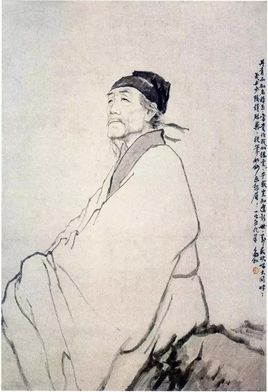

作者：杜甫
两个黄鹂鸣翠柳,一行白鹭上青天.
窗含西岭千秋雪,门泊东吴万里船.
| 原文 | 作者 |
| 译文 | 赏析 |
杜甫（712年—770年），字子美，自号少陵野老，唐代伟大的现实主义诗人，与李白合称“李杜”。原籍湖北襄阳，后徙河南巩县。为了与另两位诗人李商隐与杜牧即“小李杜”区别，杜甫与李白又合称“大李杜”，杜甫也常被称为“老杜”。

两只黄鹂在翠绿的柳枝间鸣叫，
一行白鹭向湛蓝的高空里飞翔。
西岭雪山的景色仿佛嵌在窗里，
往来东吴的航船就停泊在门旁.
诗描写早春景象。四句诗描绘四幅图景，分开来如四扇条屏，合在一起又组成一幅生动优美的风景画。首句写草堂周围新绿的柳枝上有成对黄鹂在欢唱，一派愉悦景象，呈现一片生机，有声有色，构成了新鲜而优美的意境，具有喜庆的意味。次句写蓝天上的白鹭在自由飞翔。
晴空万里，一碧如洗，白鹭在“青天”映衬下，色彩极其鲜明。两句中一连用了“黄”“翠”“白”“青”四种鲜明的颜色，织成一幅绚丽的图景。第三句写凭窗远眺西山雪岭。岭上积雪终年不化，所以积聚了“千秋雪”。“含”字表明此景仿佛是嵌在窗框中的一幅图画。末句再写从门外可以见到停泊在江岸边的船只。“万里船”三字意味深长，因为多年战乱，水陆交通为兵戈阻绝，船只不能畅行，而战乱平定，交通恢复，才能看到来自东吴的船只。
“万里船”与“千秋雪”相对，一言空间之广，一言时间之久。诗人身在草堂，思接千载，视通万里，胸次开阔。诗一开始表现出草堂的春色，诗人的情绪是陶然的，而随着视线的游移、景物的转换，江船的出现，便触动了他的乡情。全诗对仗精工，着色鲜丽，动静结合，声形兼俱，四句诗宛然组成一幅咫尺万里的壮阔山水画卷。